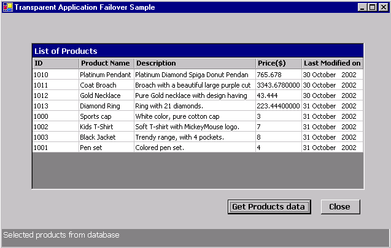

Transparent Application Failover (TAF)
Callback Support in Oracle Data Provider for .NET
This purpose of this sample is to demonstrate TAF (Transparent
Application Failover) with a C# application, when the connection to a
database is severed.
|
ODP.NET offers faster and reliable access to Oracle
Database by using Oracle Native APIs. ODP.NET provides
features to access any .NET application. The data access
through ODP.NET can be achieved using a collection of
classes contained in Oracle.DataAccess assembly.
When a connection to an Oracle instance is unexpectedly
severed, Transparent Application Failover (TAF) seamlessly attempts to
failover to another Oracle instance. Due to the delay
that a failover can incur, the application may wish to be
notified by a TAF callback. ODP.NET supports TAF callback
through the Failover event of the OracleConnection object. To
receive TAF callbacks, an event handler function must be registered
with the Failover event of the OracleConnection object.
Also the enlist connection parameter
is to be set to false for TAF
to work properly.
When a failover occurs, the Failover event is raised and
the registered event handler is invoked several times
during the course of reestablishing the connection to the
Oracle instance. The first call to the event handler
occurs when the Oracle database first detects an instance
connection loss. This allows the application to act accordingly
for the upcoming delay for the failover. If the failover is successful,
the Failover event is raised again when the connection is reestablished
and usable. At this time, the application can re-execute ALTER SESSION
commands and inform the application user that a failover has occurred.
This sample demonstrates how to register a callback
method for a Failover event so that it is called when the
database connection is lost. It also demonstrates
changing session information (date format of last modification date column
of products table) again on the new connection obtained
by TAF. Following events are captured in application :
FailoverEvent.Begin : Indicates that failover has detected a lost connection and failover is starting.
FailoverEvent.End : Indicates successful completion of failover.
FailoverEvent.Abort : Indicates that failover was unsuccessful and there is no option of retrying.
FailoverEvent.Reauth : Indicates that a user handle has been re-authenticated.
FailoverEvent.Error : Indicates that an error occurred while trying to re-establish the connection.
|
-
The sample at start up displays the form with blank data
grid. When "Get Product Data"
button is clicked, the data is fetched from the database
and displayed to user as shown in Fig. 1

Fig. 1
-
Visual C# installed with MS Development Environment
7.0 version (MS Visual Studio .NET) including MS .NET Framework
1.0 version
-
Oracle8i
Database or later running SQL*Net TCP/IP listener (can be downloaded here)
-
Oracle Data Provider for .NET (ODP.NET) (can be
downloaded here)
Unzip TAFSample.zip using
Winzip or command utility to your convenient directory. Extraction of
the zip file results in the creation of TAFSampledirectory.
Connect to your database as any user and run the script TAF\Setup\DatabaseSetup.sql at the SQL
prompt.
@<Extract_Dir>\TAF\Setup\DatabaseSetup.sql
where <Extract_Dir> is
the directory where you have extracted the sample.
The script creates an user "OraNet"
with password "OraNet".
It creates a PRODUCTS table as below and populates it with
data.
| Column Name |
Column Type |
| PRODUCT_ID |
NUMBER(5) |
| PRODUCT_NAME |
VARCHAR2(200) |
| PRODUCT_DESC |
NVARCHAR2(1000) |
| CATEGORY |
VARCHAR2(100) |
| PRICE |
NUMBER(15,8) |
| PRODUCT_STATUS |
VARCHAR2(30) |
| WEIGHT |
NUMBER(37,32) |
| MODIFICATION_DATE |
DATE |
-
Ensure that the Database setup has
been completed.
-
The tnsnames.ora file
should be suitably modified for your database entry so that
TAF tries to reconnect when the database connection is
lost. The tnsnames.ora file is
located at <Oracle_Home>/network/Admin
directory. Your database TNS entry should look like this :
where <Oracle_Home>
is the directory where your database or SQL* Plus client is
installed. Replace the values for the database parameters
highlighted in red color with your database parameters.
<DBFAILOVER.US.ORACLE.COM> =
(DESCRIPTION =
(ADDRESS_LIST =
(ADDRESS = (PROTOCOL = TCP)(HOST = <myhostname>)(PORT = <1521>))
)
(CONNECT_DATA =
(SERVCE_NAME = <dbfailover>)
(FAILOVER_MODE = (TYPE = SELECT) (METHOD = BASIC) (RETRIES=100)
(DELAY=1))
)
)
-
Open TAF.sln using
Visual Studio .NET from <Extract_Dir>\TAF
folder.
-
Edit ConnectionParams.cs
file to change the database connection parameters
i.e.TNSName for database you want to use . Save this file.
-
Ensure that the following .NET Component References have
been added to TAF project:
- System
- System.Data
- System.Drawing
- System.Windows.Forms
- System.XML
- Oracle.DataAccess.
To add the above .NET Components
- Go to Menu -> View -> Solution Explorer.
- Right click on TAF
project, choose 'Add Reference'.
- Choose the above .NET Components from the list
displayed.
- Click 'Select', then OK.
- The chosen .NET component gets added to the
project.
-
Build and run the sample in Debug mode. (Please ensure to
perform the following steps)
-
The sample when run, shows a form with a blank data grid.
The user should click "Get
Products Data" button to start fetching the product
details from the database.
-
For demonstrating TAF, a breakpoint has been set in the
source code just before the line where, OracleDataAdapter fills the DataSet with
products data using the previously created connection.
Because of this breakpoint, the execution of the query will
be halted.
-
Now the user should restart the database from SQL* Plus using following
command,
To login as a DBA user,
SQL> Connect
sys/<your_sys_password>@<Your_TNSName> as sysdba
To
shutdown and restart database
SQL> startup force
-
After restarting the database, the user should return to
the application and continue the execution of application.
The Failover event is called and the Failover handler method
displays the appropriate messages in a message box and in
the status bar of application.
-
The query will be executed again against the database
using a new connection, data fetched and displayed in the
data grid.
| Directory |
File Name |
Description |
| TAF\doc |
Readme.html |
This file |
| blaf.css |
This is a cascading stylesheet applied to Readme.html |
| TAF\doc\images |
This folder contains images used in the
Readme.html file |
| TAF\src\ |
ConnectionParams.cs |
This C# file contains parameters for database
connection. |
| TAF.cs |
This C# file contains source code to register TAF
callback event handler and display products data. |
| TAF.csproj |
C# project file |
| TAF.csproj.user |
Visual Studio Project User Options (this file gets
automatically generated when a Visual Studio Project is created) |
| TAF.resx |
.NET XML Resource Template (this file gets
automatically generated when a Visual Studio Project is
created) |
| TAF.sln |
Visual Studio Solution |
| TAF\Setup |
DatabaseSetup.sql |
This is a SQL script file |
|